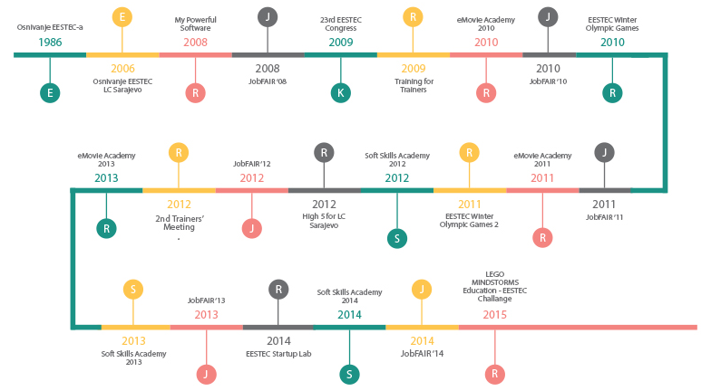

Kao što ste već upoznati, 12.08. je održan i prvi radni sastanak na kom su, uz vrijedne članove IT tima, prisustvovali i naši HR koordinator te glavna organizatorica.
Sastanak je održan na dvije lokacije. Prvi, uvodni dio, održan je u Hookah Lounge Divan Hanu, dok je drugi dio, nakon podjele zadataka, održan u MyFACE-u.
Sam sastanak je protekao u dobrom raspoloženju, a posebno mi je drago što je pored članova koji su od ranije aktivni u EESTEC-u tu bilo i par novih članova. Tema uvodnog dijela sastanka bilo je upoznavanje članova sa samim JobFAIR-om, dakle šta JobFAIR predstavlja za nas kao LC i koja su to zaduženja članova IT tima na Sajmu (kako u pripremnom dijelu tako i u danima Sajma) te sam rad u timu.
Nakon uvodnog dijela i kratkog predstavljanja članova pomenuti su okvirni dijelovi stranice na kojima ćemo raditi u narednom periodu poslije čega su delegirani i prvi zadaci za prisutne koji su odmah pristupili izradi istih pa bih ovu priliku iskoristio i da ih pohvalim za učinjeno jučer, a nakon, nadam se, uspješno izvršenih zadataka to ću učiniti i pojedinačno.
